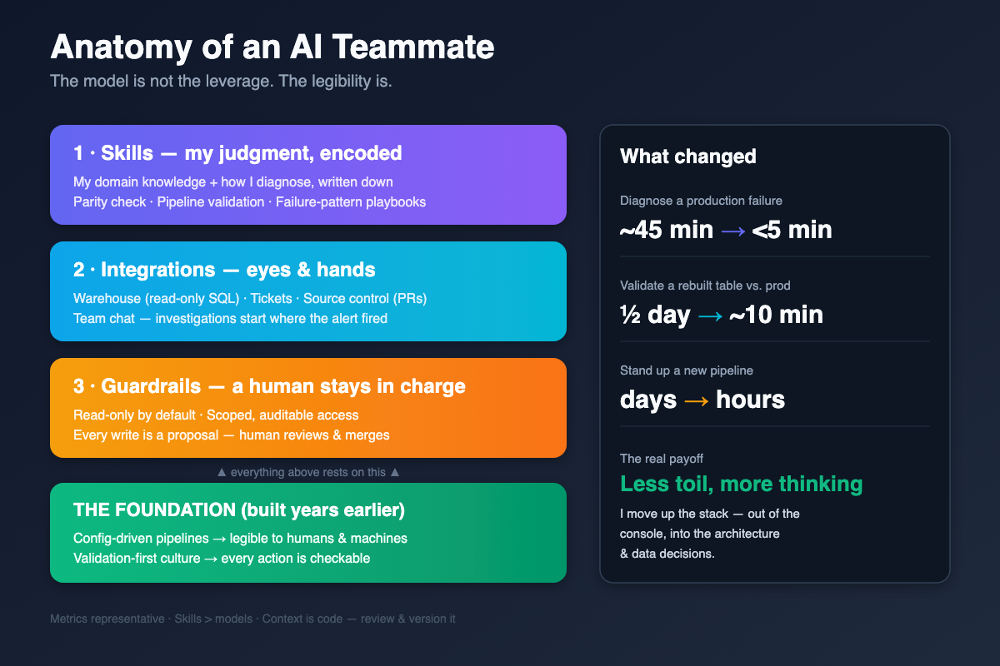

I Trained an AI to Think Like Me. Now It Does Half My Data Engineering Job.
I didn't plug in a chatbot. I spent months teaching an AI my domain knowledge and my judgment — and here's what actually worked on a production data platform.

There's a version of this story that's about a model. It goes: I plugged in a frontier LLM, wired up a few integrations, and watched my cycle times collapse. It's a good story. It's also the least interesting half of what happened.
The real story is quieter and took a lot more work: I trained an AI to think like me. Not to write code — it could already do that. I taught it my domain knowledge, my instincts, and the specific way I reason about a data platform after more than a decade of running one. The tooling was a weekend. The teaching was months. And the teaching is the entire reason it works.
I'm a data engineer on a large fintech's analytics platform. Over the last two quarters I folded this AI teammate into how I work day to day — one that reads my tickets, queries my warehouse, opens my pull requests, and runs my validation the way I would. The results were real:
- Diagnosing a production pipeline failure: ~45 minutes → under 5 (representative)
- Validating a rebuilt table against production: half a day of hand-written SQL → ~10 minutes
- Standing up a new pipeline from a template: days → hours
But if you asked me what caused those numbers, I wouldn't point at the model. I'd point at everything I put into it. Here's how I did it.
The real project: I trained it to think like me
A frontier model out of the box is brilliant and generic. It knows Spark, it knows SQL, it knows nothing about how I work. Left alone it produces textbook answers to problems that, in my world, have a specific right answer shaped by years of hard-won context. So I didn't just "use" an AI. I trained one.
I fed it my domain knowledge — deliberately, in writing. Not "here are the docs," but the tacit stuff that never makes it into docs: which two lookup tables are the usual suspects when a sales channel misclassifies, why a pipeline that's green can still be wrong, the exact order I check things in when an alert fires, the difference between drift that's a bug and drift that's the business genuinely changing. The mental models I'd built over more than a decade of running pipelines — I wrote them down and handed them over.
Then I taught it my method, not just my facts. How I decompose a vague ticket into a query. How I reason about the blast radius of a schema change before touching it. How I decide when a hotfix is acceptable and when it has to be a proper fix. How much I trust a number before I ship it. When I say the teammate diagnoses an incident "the way I would," I mean that literally — because I encoded the way I would.
The uncomfortable, motivating truth: the better I could articulate my own thinking, the better the AI got. Every place it produced generic output was a place I hadn't yet made my own judgment explicit. Training it became a mirror. It forced me to name the instincts I'd been running on autopilot — and naming them made me sharper too. The AI didn't replace my expertise. It made me write my expertise down, and then it scaled it.
That's the mental shift. I stopped thinking of it as "a tool I use" and started thinking of it as "an apprentice I'm teaching." Everything below is the mechanics of that apprenticeship — and the thing I had to get right before any of it could work.
The problem: engineering is only half the job
To understand why generic AI fails here, you have to see what the job actually is. If you've run pipelines at scale, you know the code is the easy part. The job is the surround:
- Figuring out which of 70+ pipelines is the one throwing alerts, and why it started today and not yesterday.
- Reading a ticket, translating it into a query, running it against the right schema in the right region, and interpreting the result.
- Proving that a table I rebuilt actually matches the one it replaces — column by column, not just row counts.
- Choreographing a change across multiple repos, environments, and regions without breaking a downstream consumer I forgot existed.
None of that is "write a Spark job." It's system understanding and process adherence. And it's exactly where a generic code-generating chatbot is useless — because it doesn't know the systems and doesn't follow the process. It'll happily write me a beautiful MERGE statement against a table that doesn't exist.
I didn't need something that could write code. I needed something that understood my systems, followed my runbooks, and could safely touch real infrastructure with me in the loop. Which meant teaching it — and building on a platform that could actually be taught.
The prerequisite: an AI teammate is only as good as your platform's legibility
Here's the part that took me a while to say out loud. I could only train the AI to think like me because the platform I work on was already built to be read — by humans, and it turned out, by machines. Two habits I'd invested in for entirely unrelated reasons became the foundation:
1. The pipelines are config-driven, not hand-written. I moved my work off bespoke Spark jobs onto a declarative framework: a pipeline is a config — source, watermark, staging, merge strategy, DQ gates — and an engine that generates the job from it. I did this so onboarding a new source took hours instead of days. The unexpected payoff: a config is legible. An AI can read a declarative pipeline definition and actually reason about it. It cannot reason about 400 lines of imperative Spark that only the original author understood.
2. I validate everything, by default. I already ran "golden-check" data-quality gates that halt a load when key metrics drift outside tolerance. I already did column-level parity checks when migrating or rebuilding tables. That validation-first habit is what makes it safe to let a trained AI do real work. It doesn't need to be trusted — it needs to be checkable. Every action it proposes lands against a wall of validation I'd run anyway.
If your platform is a pile of one-off scripts with no validation layer, no amount of training will help — the AI will amplify the chaos. If it's declarative and verifiable, everything you teach it compounds. The model is not the leverage. The legibility is.
What I actually built
Three layers. In descending order of how much they mattered.
Layer 1: Skills — my judgment, encoded
This is where the training lives, and it's the least glamorous. I took the procedures that ran on autopilot in my head and wrote them as skills: structured instructions the AI loads when a task matches. Each one is a piece of me, made explicit.
A few of mine:
- Table parity check. Given two tables and a grain, compare them column by column, compute match percentage, and diagnose the drift (placeholder values, UUID mismatches, timestamp skew). Emits a report. This is the single skill I use most — every migration and rebuild runs it.
- Pipeline regression / source-to-target validation. Driven off a ticket: reconstruct what the pipeline should produce, run it against staging, and validate the output against source. Catches the late-arriving-data and watermark bugs that used to ship silently.
- Table maintenance operations. The backup / copy / cleanup / reset choreography for the table layer — the kind of multi-step operation that's easy to get subtly wrong at 6pm on a Friday.
Each skill encodes not just the happy path but the failure patterns — the "if you see X, it's usually Y" knowledge that separates a five-minute diagnosis from a two-hour one. This is the bulk of the leverage, and it's really just my expertise, written down.
Layer 2: Integrations — giving it eyes and hands
The skills are how it thinks; the integrations are what let it act against real systems. I wired the teammate — via a standard tool protocol — to:
- The warehouse, for read-only SQL against my schemas.
- Tickets, so it can read the actual work item instead of a paraphrased summary.
- Source control, so it can read code, open pull requests, and check CI status.
- Team chat, so an investigation can start from the thread where the alert fired.
The difference between "an AI that writes SQL" and "an AI that runs the query against the right schema, reads the ticket that prompted it, and posts the result in the thread" is the difference between a toy and a teammate.
Layer 3: Guardrails — I stay in charge
This is short because it's non-negotiable:
- Read-only by default. Queries and diagnostics run freely. Anything that mutates data or infrastructure is gated.
- Access is requested, not assumed. The teammate operates under scoped, auditable credentials — the same access-request flow I go through, not a standing god-mode key.
- Every write is a proposal. It opens the pull request; I review and merge. It drafts the migration; I approve the run.
The teammate never is the decision-maker. It's the fastest, most tireless pair of hands I have — that still needs a code review.
What it looks like in practice
Three real shapes of work, anonymized.
Incident diagnosis. An alert fires on a pipeline. Instead of opening the console, finding the run, reading the logs, and cross-referencing recent changes, the teammate does the first pass — following the exact sequence I taught it: pulls the failed run, reads the error, checks recent merges to that pipeline's config, and comes back with "this started after yesterday's platform version bump; it's a shuffle/AQE regression, here's the config override that fixes it." I confirm and ship. The 45-minute grind becomes a 5-minute review.
Table rebuild validation. I rebuild a table — new logic, same contract. The old way: I'd write ad-hoc SQL to spot-check a few columns and hope. The new way: the parity skill compares every column at the stated grain, flags the three columns that drift, and diagnoses why (a timestamp precision change and two placeholder-vs-null mismatches). I ship knowing it's a 100% match, not a "looked fine" match.
Migration under deadline. A source gets deprecated; several pipelines across multiple regions have to move before a hard cutoff. The teammate reads the configs, drafts the changes per region, and runs parity checks against the pre-migration output for each one. I sequence and approve. The blast radius shrinks from "hope I caught everything" to "validated, region by region."
What worked, and what didn't
What worked:
- Encoding my judgment as skills. Highest ROI by a wide margin. The act of articulating a procedure precisely often improved the procedure for me too.
- Validation as the safety net. Because I could check everything cheaply, I could let the teammate move fast without fear.
- Config-driven pipelines paying an unexpected dividend. Legibility I built for humans turned out to be legibility for the AI.
What didn't, or took real work:
- Vague teaching produced vague work. "Investigate the pipeline" got generic output. "Pull the failed run, check the last five merges to this config, compare executor memory against the quota" got real diagnosis. Precision in, precision out — the AI is only as good as how clearly I could explain myself.
- Context has a shelf life. Skills that named a specific table or flag went stale when the platform changed. I had to treat what I'd taught it as code — reviewed, versioned, and updated, not written once and forgotten.
- It doesn't replace judgment on ambiguous data questions. "Is this drift a bug or genuine behavior change?" still needs someone who knows the business. The teammate surfaces the anomaly; I decide what it means.
The real payoff wasn't speed
The time savings are easy to put in a slide. The thing that actually changed how I work is harder to measure: cognitive overhead dropped.
I spend less of my day on console navigation, deployment choreography, and the mechanical grind of validation — and more on the parts that need a human: the architecture, the data model, the ambiguous "why is this number wrong" questions where the answer lives in the business, not the logs. The teammate absorbs the toil. I do the thinking.
That's the shift I'd defend to anyone building toward a Principal-level data platform: the goal of training an AI teammate isn't to write more code faster. It's to move yourself up the stack — out of the console and into the decisions.
If you're going to try this
The lessons, compressed:
- Teach it your thinking, not just tasks. The magic isn't the model — it's how completely you can transfer your domain knowledge and judgment into it. Where it's generic, you haven't finished explaining yourself.
- Legibility first. If your platform isn't declarative and readable, make it that way before you add AI. The AI is a multiplier of whatever discipline you already have — including the lack of it.
- Validation is the enabler. You can only let a trained AI move fast if you can cheaply check its work. Build the parity checks and DQ gates first; they pay off with or without AI.
- Keep yourself in charge. Read-only by default, scoped access, every write is a proposal. Trust is not the model; verifiability is.
- Treat context as code. What you teach it goes stale. Review and version it like anything else in production.
The model was the visible part. The invisible part — the months I spent teaching it to think like me, on a platform built to be legible and verifiable — was the part that made it work. If you put in that work, the model is almost an afterthought. And if you don't, no model will save you.
I'm a Staff data engineer with 12+ years building and operating large-scale data platforms. I write about the unglamorous engineering underneath the interesting outcomes.